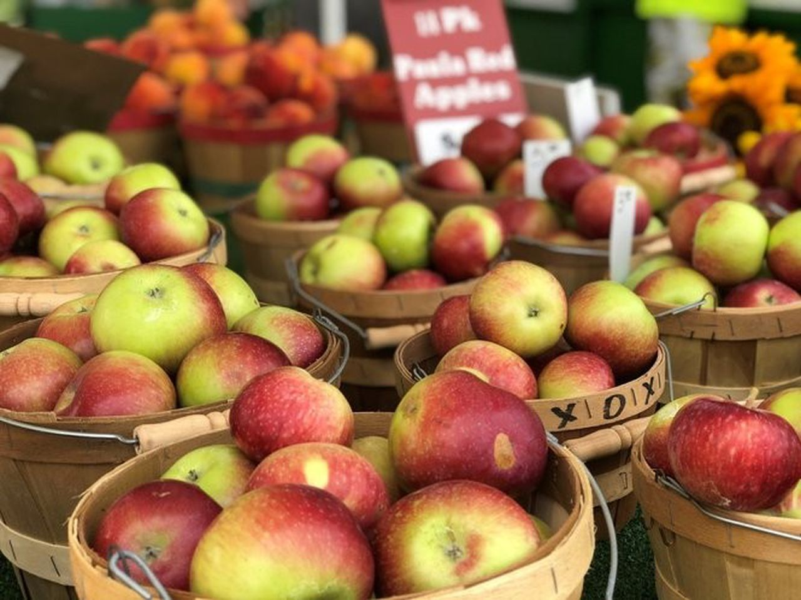

Home
Parking & Directions
Food Vendors
Food & Vendors
Selected Recommendations:
Disco Fries ordered from Silo Food Truck, which are crispy fries topped with gravy, mayo, and red pickled radishes to add a tangy crunch
Pork and beef dumplings served by the Tibetan Momo Bar, topped with soy sauce and house made hot sauce
Food Vendors
Macarollin
Mr. Squeeze Lemonade
Kettle Corn Shoppe
SPM Empanadas
Fittnell Barbeque
Tibetan Momo Bar
Travelers Kitchen
Asempe Kitchen
Vail Bros inc
On The Street Pitas
Silo Food Truck
B&B Kettle Korn
Robbie’s Produce
PDRS Catering
Trini Style
Coltivare
She Messy Tacos
Adam Grill
Thai Basil
Zocalo
Yxi's Arepas & Gordito
Solaz
Monks on the Commons
Smash Bros World Foods
The Yellow Deli
Thai Palace
Lou's Covert Kitchen
Playland Amusements Concessions
Fresh Produce
Schweigarts Sugar Shack
Schoolyard Sugarbush
A J Teeterfarm
Littletree Orchards
Creamcycle
Maple River Syrup Company
MacDonald Farms
Cornell Society of Horticulture
Laughing Goat Fiber Farm
Robbie’s Produce
Picaflor Farm
Little Farm Bakery
Little Grey Bakery
Mojo Hot Sauce
Photo Gallery
